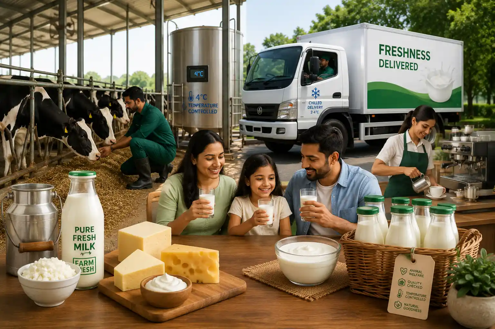

CM
CMCow Management
Manage identity, breed, lifecycle, lactation, behavior notes, and productivity.

Services
Operational clarity for cows, milk, feed, staff, veterinary care, and reporting.
Management modules
Each service area uses clear records, alerts, and summaries so owners and managers can act quickly.
CMManage identity, breed, lifecycle, lactation, behavior notes, and productivity.
 MP
MPCapture morning and evening yields, batch totals, trends, and collection notes.
 AH
AHTrack diagnosis, treatment, recovery windows, and follow-up tasks.
 VC
VCPlan recurring vaccines and avoid missed protection windows.
 FD
FDMonitor feed stock, consumption, cost, supplier, and reorder requirements.
 BR
BRRecord heat cycles, insemination details, pregnancy checks, and expected dates.
 FM
FMView key farm events, maintenance tasks, weather, and employee activities.

MCCoordinate collection timing, cooling status, transfer logs, and delivery notes.
 QC
QCKeep fat, SNF, temperature, hygiene, and batch compliance records.
Premium workflow
The service ecosystem turns field activity into clear dashboards and trustworthy decisions.